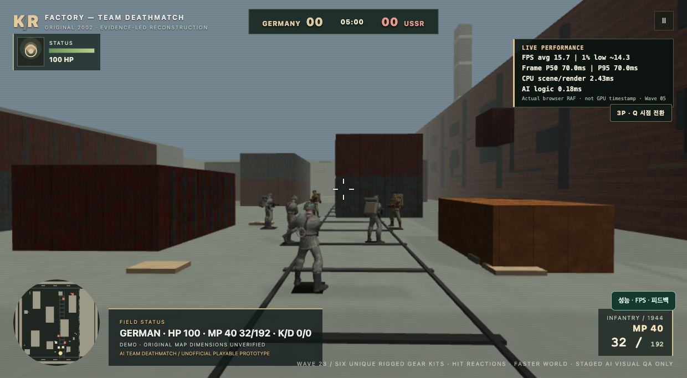
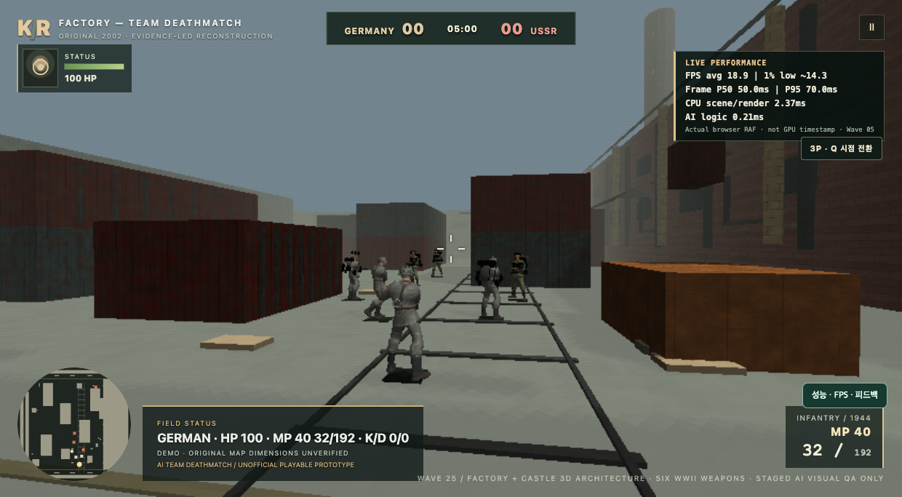
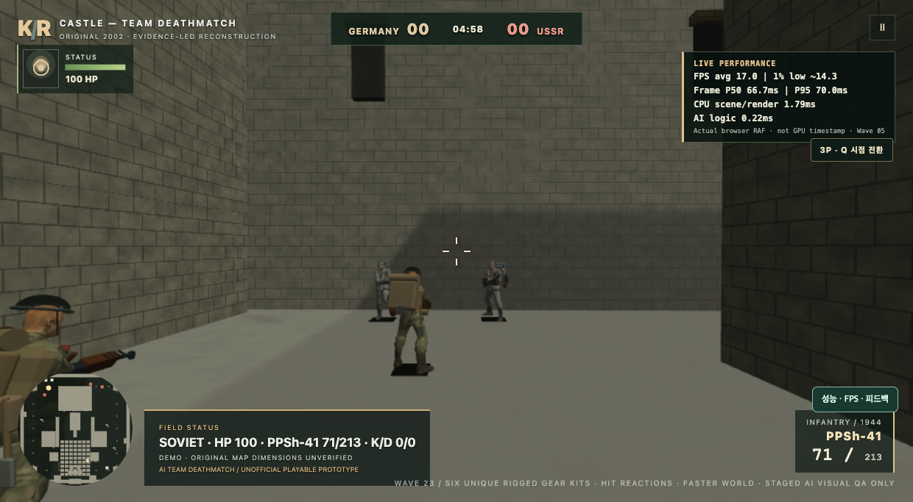
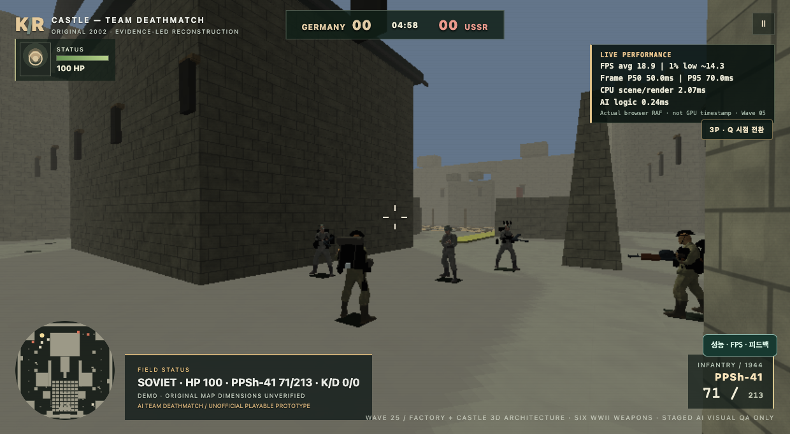
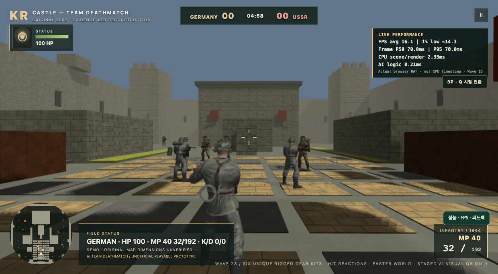
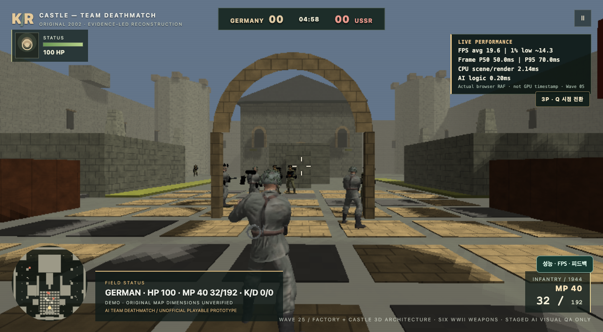

왼쪽: GitHub 공개 main SHA 9ef0e92 (직접 확인한 커밋을 별도 보존된 작업 트리에서 HTTP 실행) · 오른쪽: Wave25 로컬 소스.
Mac Chrome SwiftShader 소프트웨어 WebGL2로 동일 맵, 진영, 시점에서 캡처. 실행 중 AI 위치와 시간은 독립 샘플입니다. 시각 효과 및 맵 상태 검토용이지 Windows FPS 비교 자료가 아닙니다.





